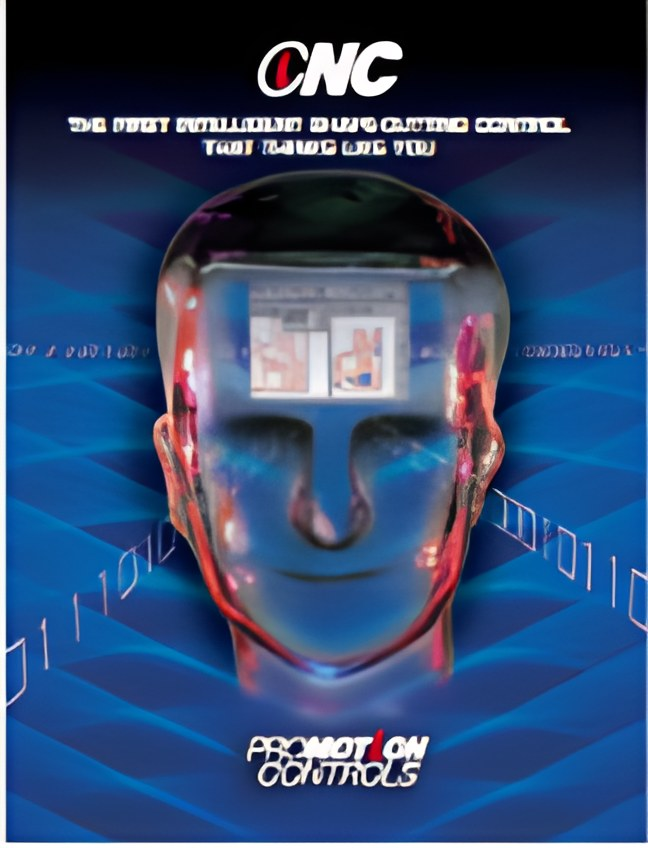
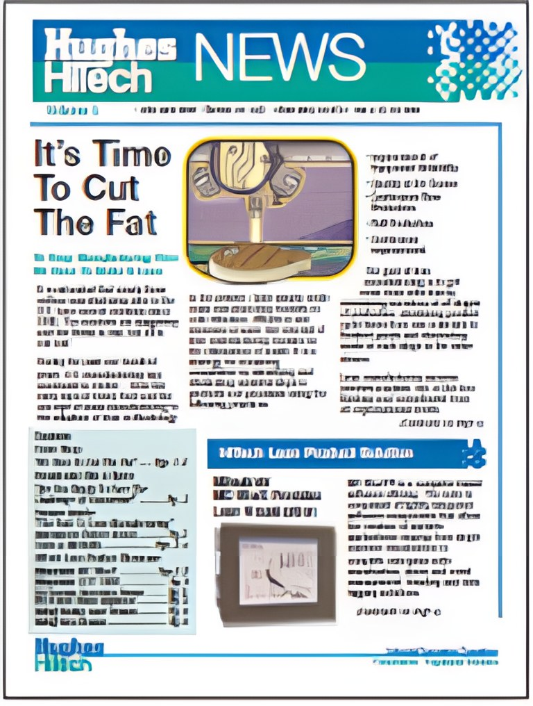
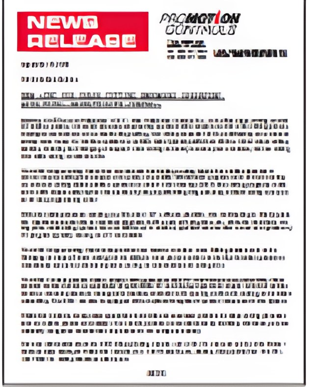
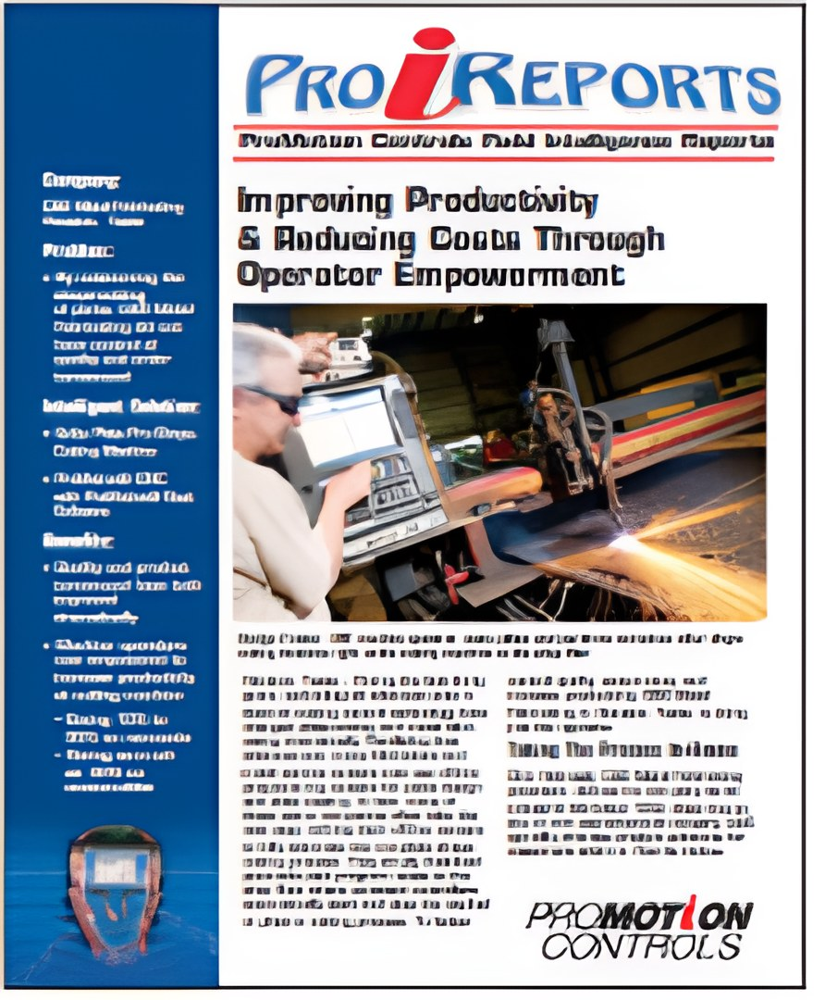

Tim A. Schultz is a marketing communications professional with over 25 years of business-to-business marketing and communications experience.

E-Initiatives That Can Drive Or Drown A Business
Four initiatives that drive a business forward, and two that can sink it. Tim builds on an idea from Bob Blaschke, COO of Compact Power Services.
Read the full post
How To Utilize The Greatest B2B Marketing
How business-to-business companies can borrow from consumer internet marketing: educate, talk with customers, stay in touch and keep marketing in tough times.
Read the full post
Social Media Marketing Strategies That You Should Avoid At All Costs
Common social media mistakes, from spamming followers and one-way posting to neglected accounts and untracked traffic.
Read the full post
10 Steps For Creating A Successful Case History
A step-by-step process for a customer case history: from a trade editor’s interest and the customer interview to photos, approval, publishing and reuse.
Read the full post
Making Satisfied Customers Your Best Sales Tool
Why case histories and product success stories sell, and how to reuse them as articles, reprints, web pages, flyers and newsletter features.
Read the full postChampagne Branding On A Beer Budget
Low-cost ways to keep a brand visible on a tight budget, from smaller ads and news releases to newsletters, direct mail and smaller trade show booths.
Read the full post